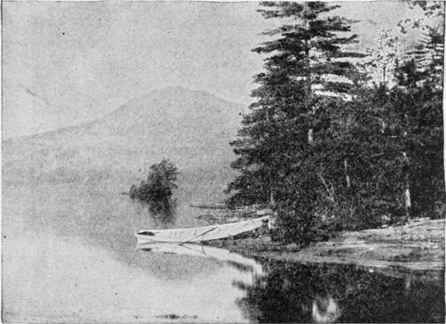
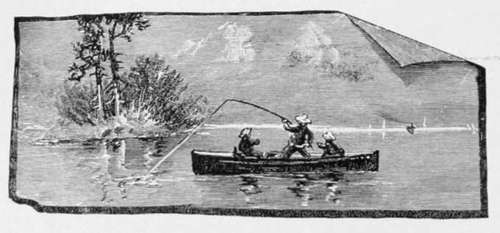

The Brook Trout. Part 7
Description
This section is from the book "American Game Fishes", by W. A. Perry. Also available from Amazon: American Game Fishes: Their Habits, Habitat, and Peculiarities; How, When, and Where to Angle for Them.
The Brook Trout. Part 7
"Seven."
"Did you keep them?"
"No. I thought we were going to have Trout for supper. Think you, we left the classic hills of Harvard to initiate our first camp amid these granite solitudes by a banquet on Bull-pouts? Perish the thought!"
"Perhaps it would have been safer to keep the Bull-pouts, as we are all rather hungry, but we will see what can be done."
Preparing my tackle I walked along the shore near the foot of the granite cliff where the water was deep, and a tree had fallen into the lake. Standing alongside a large bowlder I cast my hackles toward the tree-top, and the first cast fastened an eight-inch Trout. I continued my fishing for half an hour, by which time enough had been secured for present needs, and we returned to the camp-fire.
During our meal, Rob, who had watched my fishing with interest, inquired the reason why he had only caught Bull-pouts, instead of Trout as he had expected; to which I replied that he had selected for his fishing a little muddy cove which was the natural home of theBull-pout, and added that fishing as he did with bait, he would do better to seek for Trout among the ledges. My advice was followed, and before night closed in, we had taken several more Trout-the two young fellows with bait, and I with white miller. We walled in with loose stones a little pool in which to keep our fish alive, and at last, thoroughly wearied with the toils of the day, we replenished the fire, for the nights were chilly in those mountains, turned in and slept soundly.
At dawn we were astir, our breakfast was soon dispatched, and rods in hand, we sallied forth in quest of new achievements. The weather was wild, windy, and unfavorable for fly-fishing, and when at noon we assembled for dinner, it was found that the catch of the bait rods had the advantage in both numbers and weight, whereat my friends rejoiced. And while dinner was in progress I noted occasional innuen-dos concerning the inferiority of flies as compared with bait. None of the Trout thus far taken, were more than a pound in weight, but my friends were very desirous that some of the big fellows of which they had heard might fall victims to their skill. I remarked that we had already corraled five times as many Trout as we could use, and that most anglers would be well satisfied with such a catch, whether size or numbers were considered. But the big Trout still formed the burden of their conversation.
After an hour's rest we walked along the shore in the direction of an old catamaran or raft formed of two logs about twenty feet long, which had been placed side by side, and rudely connected by cross-bars and withes. Some discussion was held about the propriety of putting out into the lake upon this raft, but the gusts which swept the surface seemed to render such a voyage inexpedient. During the conversation I had advanced to the end of the catamaran which lay off shore, and was casting my fly toward the center of the lake, while Joe, with an improvised handspike inserted beneath the raft, essayed to move it from its resting place. Much to his surprise the crazy fastenings of the logs gave way, and the outermost one on which I was standing, intent upon my cast, aided by an inopportune puff of wind, swung outward and away from shore. I did not realize my situation until a warning shout caused me to turn my head- too late.
"Holy Moses!" shouted Joe. "What'll we do now?"
The log began to roll, and in order to maintain my upright position, I was obliged to seat myself astride upon it with my legs in the water. And thus I slowly drifted out into the lake. The consternation of my friends for my mishap soon gave way to mirth, as they saw me comparatively master of the situation, and those irreverent youngsters opened a fire of remarks more or less nautical and tantalizing in their character.
"Ship ahoy." "Where are you bound?" "Hard a-lee."
"Hard down your helm." "Give her the sheet and let 'er howl," etc.
I made no response, but continued casting to the right and left, as I drifted onward. The talk of large Trout had induced me after dinner to change the red hackle I had used as a stretcher fly for a large blue-jay. I had no expectation of a rise so far from shore, but to my surprise, when almost in the middle of the lake, the jay was taken and by a very large Trout. It was a battle royal which followed, but by the time the log had drifted ashore the fish was conquered, and when at last we grounded, and disembarking from my uncomfortable craft I waded to dry land, I led the fish into a shallow pool of water where he was safe. I was soon rejoined by my companions who had hurried around to meet me, meanwhile watching the contest with much interest.
"Ah," said Joe, as, panting and breathless he gazed upon the magnificent fish, "Isn't that a hand credo?'1"
The fish weighed upward of three pounds, and was by far the largest taken during our stay. For still another day we whipped the waters of the little lake, and before our departure on the following morning, we opened our corrals, and gave liberty to nearly two hundred of our bright-hued captives. Our tramp homeward was without incident, and we parted next day at the railway station. Since that trip we never meet without some allusion to the big Trout of Pennyroyal Pond.
By F. H. Thurston.

Continue to: